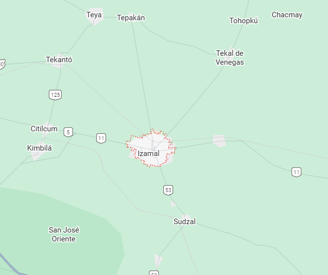

Es un Pueblo Mágico ubicado en el corazón de Yucatán, conocido como “La Ciudad Amarilla” por el color que domina sus calles y edificios. Fundada en la época prehispánica, fue un importante centro religioso maya dedicado al dios Itzamná. En la ciudad destacan el Convento de San Antonio de Padua, construido sobre una antigua pirámide, y varias estructuras mayas como Kinich Kakmó. Izamal refleja la fusión entre la herencia maya y la época colonial, creando un ambiente único lleno de historia y tradición.
Ubicación |
Información Esencial
|